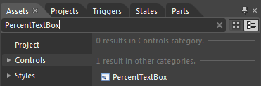

The steps to create a PercentTextBox in the application by using Expression Blend are as follows:
1. Open Expression Blend.
2. On the File menu, select New Project. This opens the New Project dialog box.

Figure 769: Expression Blend
3. In the Project types panel, select WPF Application and then click OK.

Figure 770: New Project panel
4. Add the following reference with the sample project:
· Syncfusion.Shared.WPF.dll
· On the Window menu, select Assets. This opens the Assets Library dialog box.
5. In the Search box, type PercentTextBox. This displays the search results.

Figure 771: Assets
6. Drag the PercentTextBox control to Design View.

Figure 772: Expression Blend – Design View
|
XAML
<Window x:Class="WpfApp.MainWindow" xmlns="http://schemas.microsoft.com/winfx/2006/xaml/presentation" xmlns:x="http://schemas.microsoft.com/winfx/2006/xaml" Title="PercentTextBox Demo" Height="367" Width="492" xmlns:syncfusion="http://schemas.syncfusion.com/wpf">
<Grid x:Name="LayoutRoot"> <syncfusion:PercentTextBox Height="23" HorizontalAlignment="Left" Margin="92,134,0,0" Name="percentTextBox1" VerticalAlignment="Top" Width="120" /> </Grid> </Window> |

Figure 773: PercentTextBox
See Also
Creating a PercentTextBox by using XAML
Creating a PercentTextBox by using C#